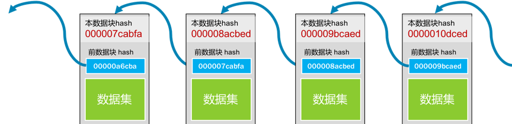
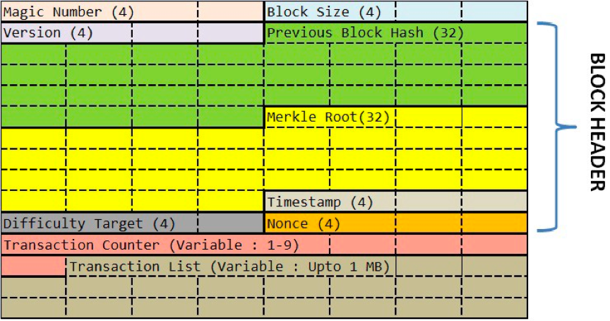
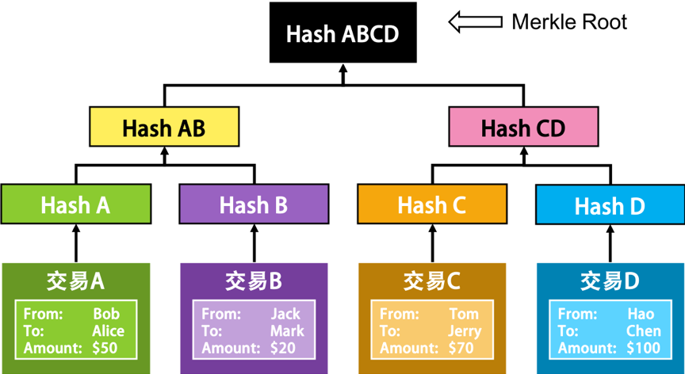
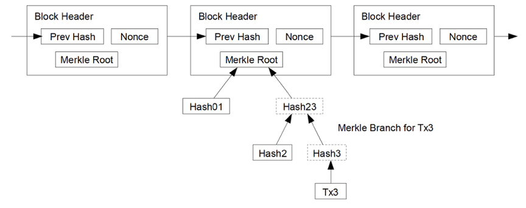
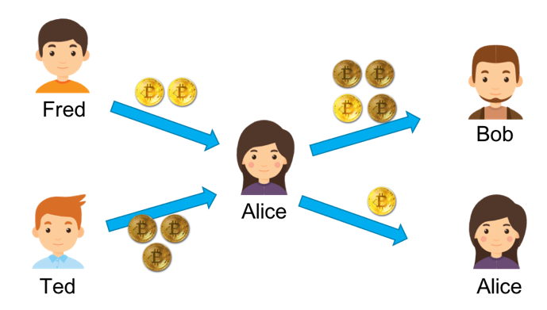
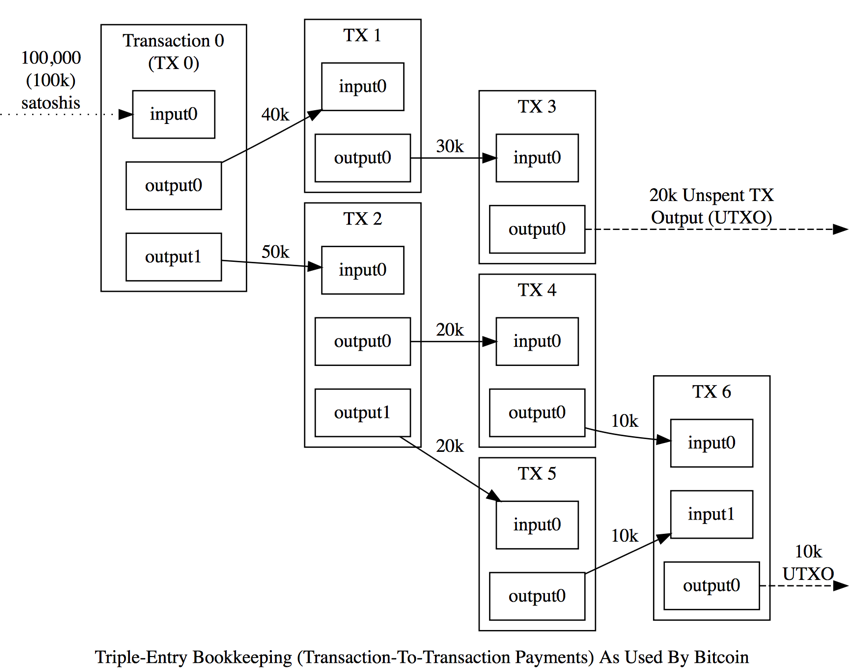

- 000 开篇词 洞悉技术的本质，享受科技的乐趣.md.html
- 001 程序员如何用技术变现（上）.md.html
- 002 程序员如何用技术变现（下）.md.html
- 003 Equifax信息泄露始末.md.html
- 004 从Equifax信息泄露看数据安全.md.html
- 005 何为技术领导力.md.html
- 006 如何拥有技术领导力.md.html
- 007 推荐阅读：每个程序员都该知道的事.md.html
- 008 Go语言，Docker和新技术.md.html
- 009 答疑解惑：渴望、热情和选择.md.html
- 010 如何成为一个大家愿意追随的Leader？.md.html
- 011 程序中的错误处理：错误返回码和异常捕捉.md.html
- 012 程序中的错误处理：异步编程和最佳实践.md.html
- 013 魔数 0x5f3759df.md.html
- 014 推荐阅读：机器学习101.md.html
- 015 时间管理：同扭曲时间的事儿抗争.md.html
- 016 时间管理：投资赚取时间.md.html
- 017 故障处理最佳实践：应对故障.md.html
- 018 故障处理最佳实践：故障改进.md.html
- 019 答疑解惑：我们应该能够识别的表象和本质.md.html
- 020 分布式系统架构的冰与火.md.html
- 021 从亚马逊的实践，谈分布式系统的难点.md.html
- 022 分布式系统的技术栈.md.html
- 023 分布式系统关键技术：全栈监控.md.html
- 024 分布式系统关键技术：服务调度.md.html
- 025 分布式系统关键技术：流量与数据调度.md.html
- 026 洞悉PaaS平台的本质.md.html
- 027 推荐阅读：分布式系统架构经典资料.md.html
- 028 编程范式游记（1）- 起源.md.html
- 029 编程范式游记（2）- 泛型编程.md.html
- 030 编程范式游记（3） - 类型系统和泛型的本质.md.html
- 031 Git协同工作流，你该怎样选.md.html
- 032 推荐阅读：分布式数据调度相关论文.md.html
- 033 编程范式游记（4）- 函数式编程.md.html
- 034 编程范式游记（5）- 修饰器模式.md.html
- 035 编程范式游记（6）- 面向对象编程.md.html
- 036 编程范式游记（7）- 基于原型的编程范式.md.html
- 037 编程范式游记（8）- Go 语言的委托模式.md.html
- 038 编程范式游记（9）- 编程的本质.md.html
- 039 编程范式游记（10）- 逻辑编程范式.md.html
- 040 编程范式游记（11）- 程序世界里的编程范式.md.html
- 041 弹力设计篇之“认识故障和弹力设计”.md.html
- 042 弹力设计篇之“隔离设计”.md.html
- 043 弹力设计篇之“异步通讯设计”.md.html
- 044 弹力设计篇之“幂等性设计”.md.html
- 045 弹力设计篇之“服务的状态”.md.html
- 046 弹力设计篇之“补偿事务”.md.html
- 047 弹力设计篇之“重试设计”.md.html
- 048 弹力设计篇之“熔断设计”.md.html
- 049 弹力设计篇之“限流设计”.md.html
- 050 弹力设计篇之“降级设计”.md.html
- 051 弹力设计篇之“弹力设计总结”.md.html
- 052 区块链技术 - 区块链的革命性及技术概要.md.html
- 053 区块链技术 - 区块链技术细节 - 哈希算法.md.html
- 054 区块链技术 - 区块链技术细节 - 加密和挖矿.md.html
- 055 区块链技术 - 去中心化的共识机制.md.html
- 056 区块链技术 - 智能合约.md.html
- 057 区块链技术 - 传统金融和虚拟货币.md.html
- 058 管理设计篇之分布式锁.md.html
- 059 管理设计篇之配置中心.md.html
- 060 管理设计篇之边车模式.md.html
- 061 管理设计篇之服务网格.md.html
- 062 管理设计篇之网关模式.md.html
- 063 管理设计篇之部署升级策略.md.html
- 064 性能设计篇之缓存.md.html
- 065 性能设计篇之异步处理.md.html
- 066 性能设计篇之数据库扩展.md.html
- 067 性能设计篇之秒杀.md.html
- 068 性能设计篇之边缘计算.md.html
- 069 程序员练级攻略（2018）：开篇词.md.html
- 070 程序员练级攻略（2018）：零基础启蒙.md.html
- 071 程序员练级攻略（2018）：正式入门.md.html
- 072 程序员练级攻略（2018）：程序员修养.md.html
- 073 程序员练级攻略（2018）：编程语言.md.html
- 074 程序员练级攻略：理论学科.md.html
- 075 程序员练级攻略（2018）：系统知识.md.html
- 076 程序员练级攻略（2018）：软件设计.md.html
- 077 程序员练级攻略（2018）：Linux系统、内存和网络.md.html
- 078 程序员练级攻略（2018）：异步IO模型和Lock-Free编程.md.html
- 079 程序员练级攻略（2018）：Java底层知识.md.html
- 080 程序员练级攻略（2018）：数据库.md.html
- 081 程序员练级攻略（2018）：分布式架构入门.md.html
- 082 程序员练级攻略（2018）：分布式架构经典图书和论文.md.html
- 083 程序员练级攻略（2018）：分布式架构工程设计.md.html
- 084 程序员练级攻略（2018）：微服务.md.html
- 085 程序员练级攻略（2018）：容器化和自动化运维.md.html
- 086 程序员练级攻略（2018）：机器学习和人工智能.md.html
- 087 程序员练级攻略（2018）：前端基础和底层原理.md.html
- 088 程序员练级攻略（2018）：前端性能优化和框架.md.html
- 089 程序员练级攻略（2018）：UIUX设计.md.html
- 090 程序员练级攻略（2018）：技术资源集散地.md.html
- 091 程序员面试攻略：面试前的准备.md.html
- 092 程序员面试攻略：面试中的技巧.md.html
- 093 程序员面试攻略：面试风格.md.html
- 094 程序员面试攻略：实力才是王中王.md.html
- 095 高效学习：端正学习态度.md.html
- 096 高效学习：源头、原理和知识地图.md.html
- 097 高效学习：深度，归纳和坚持实践.md.html
- 098 高效学习：如何学习和阅读代码.md.html
- 099 高效学习：面对枯燥和量大的知识.md.html
- 100 高效沟通：Talk和Code同等重要.md.html
- 101 高效沟通：沟通阻碍和应对方法.md.html
- 102 高效沟通：沟通方式及技巧.md.html
- 103 高效沟通：沟通技术.md.html
- 104 高效沟通：好老板要善于提问.md.html
- 105 高效沟通：好好说话的艺术.md.html
- 106 加餐 谈谈我的“三观”.md.html
- 107 结束语 业精于勤，行成于思.md.html
- 捐赠
053 区块链技术 - 区块链技术细节 - 哈希算法
对于计算机来说，区块链就像一个单向链表，一个数据块中保存着三个信息。
- 真正的数据。
- 自己的地址（或是 ID）。
- 前一个数据块的地址。
这样，通过追溯前一个块的地址，把所有的数据块存成了一条链。所以，我们叫其 BlockChain。如下图所示。

每个数据块的 “ 地址 ” 的编码使用了计算机上的一个算法，计算机圈内人士把这个算法叫 Secure Hash。有人音译为 “ 安全哈希 “，也有人意译为 ” 安全散列 “。在计算机应用中，hash 算法主要有几个功能。
- 用来生成唯一标识一个数据块的 ID（身份证），这个 ID 几乎不能重复。
- 用来做数据的特征码。只要数据中一个 bit 的数据出现更改，那么整个 hash 值就完全不一样了。而且数据学上保证了，我们无法通过 hash 值反推回原数据。
于是，很多公司在互联网上发布信息或软件的时候，都会带上一个 Checksum（校验码）。你只要把整个文件的数据传入到那个特定的 hash 算法中，就会得到一串很长的字符串。如果和官方发布的 Checksum 字符串不一样，那么就说明信息或文件内容被人更改或是信息残缺了。因此，也被应用在 ” 数字签名 “ 中。
在计算机世界里，有两个很著名的 hash 算法，一个叫 MD5（Wikipedia 链接），一个叫 SHA-2（Wikipedia 链接）， 区块链用的是 SHA-256 这个算法。
下面是一个示例。
- 对 “chen hao” 这个信息计算 MD5 值得到 9824df83b2d35172ef5eb63a47a878eb（一个 16 进制数）。
- 如果对 “chen hao” 做一个字符的修改，将字母 “o” 改成数字 “0”，即 “chen ha0”，计算出来的 MD5 值就成了 d521ce0616359df7e16b20486b78d2a8。可以看到，这和之前的 MD5 值完全不一样了。
于是，我们就可以利用 hash 算法的这个特性来对数据做 ” 数字签名 “。也就是说，我将 ” 数据 “ 和其 ” 签名 “（hash 计算值）一起发布，这样可以让收到方来验证数据有没有被修改。
我们再来看上面那个区块链的图。
对于第一块数据，我们把其 ” 数据集 “ 和 ” 前数据块的 hash 值 00000a6cba” 一起做 hash 值，得到本区块的地址 000007cabfa。然后，下一个区块会把自己的数据和 000007cabfa 一起做 hash，得到 000008acbed 这个哈希值……如此往复下去。
根据 “ 被 hash 的数据中有一个 bit 被修改了，整个 hash 就完全不一样了 ” 这个特性，我们知道：
- 如果前置数据块中的数据改了，那么其 hash 就会完全不一样了，也就是说你的 ID 或地址就变了，于是别人就找不到这个数据块了；
- 所以，你还要去修改别人数据块中指向你的地址，但是别人数据块中指向你的地址（ID/hash）变了，也会导致他自己的地址（ID/hash）随之变化。因为他用你的地址生成了自己的地址，这样一来，你就需要把其他人的地址全部改掉。
在这样的连锁反应下，你想要偷偷修改一个 bit 的难度一下就提高很多。所以，在区块链的世界里，越老的区块越安全也越不容易被人篡改，越新的区块越不安全也越容易被人篡改。
比特币的 hash 算法
下面我来简单介绍一下，比特币中区块链的一些细节。下图是区块链的协议格式。

其中 Version，Previous Block Hash，Merkle Root，Timestamp，Difficulty Target 和 Nonce 这六个数据字段是区块链的区块数据协议头。后面的数据是交易数据，分别是：本块中的交易笔数 H 和交易列表（最多不能超过 1MB，为什么是 1MB，后面会说）。
下面我来说一下区块头中的那六个字段的含义。
- Version：当前区块链协议的版本号，4 个字节。如果升级了，这个版本号会变。
- Previous Block Hash：前面那个区块的 hash 地址。32 个字节。
- Merkle Root：这个字段可以简单理解为是后面交易信息的 hash 值（后面具体说明一下） 。32 个字节。
- Timestamp：区块生成的时间。这个时间不能早于前面 11 个区块的中位时间，不能晚于 “ 网络协调时间 “——你所连接的所有结点时间的中位数。4 个字节。
- Bits：也就是上图中的 Difficulty Tagrget，表明了当前的 hash 生成的难度（后面会说）。4 个字节。
- Nonce：一个随机值，用于找到满足某个条件的 hash 值。4 字节。
对这六字段进行 hash 计算，就可以得到本区块的 hash 值，也就是其 ID 或是地址。其 hash 方式如下（对区块头做两次 SHA-256 的 hash 求值）：
SHA-256(SHA-256 (Block Header))
当然，事情并没有这么简单。比特币对这个 hash 值是有要求的，其要求是那个 Bits 字段控制的，然后你可以调整 Nonce 这个 32 位整型的值来找到符合条件的 hash 值。我们把这个事情叫做 ” 挖矿 “（在下一篇中，我们会详细讲一下这个事）。
关于 Merkle Root
前面说到过，可以简单地将 Merkle Root 理解为交易的 hash 值。这里，我们具体说一下，比特币的 Merkle Root 是怎么计算出来的。
首先，我们知道，比特币的每一笔交易会有三个字段，一个是转出方，一个是转入方，还有一个是金额。那么，我们会对每个交易的这三个字段求 hash，然后把交易的 hash 做两两合并，再求其 hash，直到算出最后一个 hash 值，这就是我们的 Merkle Root。
我画了一个图展示一下这个过程。

上面的示意图中有四笔交易，A 和 B 的 hash 成了 Hash-AB， C 和 D 的 hash 成了 Hash-CD，然后再做 Hash-AB + Hash-CD 的 hash，得到了 Hash-ABCD，这就是 Merkle Root。整个过程就像一个 ” 二叉树 “ 一样。
下图是一个区块链的示意图，来自比特币的白皮书。

为什么要这样做呢？为什么不是把所有的交易都放在一起做一次 hash 呢？这不也可以让人无法篡改吗？这样做的好处是——我们把交易数据分成了若干个组。就像上面那个二叉树所表示的一样，我们可以不断地把这个树分成左边的分支和右边的分支，因为它们都被计算过 hash 值，所以可以很快地校验其中的内容有没有被修改过。
这至少带来三个好处。
- 大量的交易数据可以被分成各种尺寸的小组，这样有利于我们整合数据和校验数据。
- 这样的开销在存储和内存上并不大，然而我们可以提高校验一组数据的难易程度。
- 在 P2P 的无中心化网络上，我们可以把大量数据拆成一个一个小数据片传输，可以提高网络的传输速度。
最后，需要说一下的是，以太坊有三个不同的 Merkle Root 树。因为以太坊要玩智能合约，所以需要更多的 Merkle Root。
- 一个是用来做交易 hash 的 Merkle Root。
- 一个是用来表示状态 State 的。因为一个智能合同从初始状态走到最终状态需要有若干步（也就是若干笔交易），每一步都会让合同的状态发生变化，所以需要保存合同的状态。
- 还有一个是用来做交易收据的。主要是用来记录一个智能合约中最终发生的交易信息。在 StackExchange 上的问题 “Relationship between Transaction Trie and Receipts Trie” 中有相应的说明，你可以前往一看。
以太坊称其为 Merkle Patricia Tree（具体细节可参看其官方的 Wiki）。
比特币的交易模型
比特币区块中的交易数据，其实也是一个链。为了讲清楚这个链，我们需要了解一下比特币交易中的两个术语，一个是 input，一个是 output，也就是交易的支出方（input）和收入方（output）。
在比特币中，一个交易可以有多个 output，也就是说我可以把一笔钱汇给多个人，但一个 output 只能对应一个源的 input，还有一个条件就是，output 跟 input 的总数要吻合。
这里举个例子。假设，Fred 给了 Alice 2 个比特币，Ted 给了 Alice 3 个比特币，这个时候，Alice 有 5 个比特币。然而，大比特币的世界里是没有余额的，所以，对于 Alice 来说，她只有两个没有花出去的交易，一个是 2 个比特币，一个是 3 个比特币。这在比特币中叫 UTXO（Unspent Transaction Output）。
此时，如果 Alice 想要转给 Bob 4 个比特币，她发现自己的两个交易中都不够，也不能拆开之前的那两个比特币交易，那么她只能把交易 2 和交易 3 当成 input，然后把自己和 Bob 当成 output，Bob 分得 4 个，她自己分 1 个。这样的交易才平衡。

于是，一笔交易可能会包含大量的 Input 和 Output。因为比特币没有 “ 余额 ” 的概念，所以需要通过多个 input 来凑，然后 output 这边还需要给自己 “ 找零 “，给矿工 ” 小费 “。
这样一来，在比特币交易中，交易会开成一个链，也就是你把钱给了我，我又给了张三，张三给了李四……就这样传递下去，形成了一个交易链。因为还没有花出去，所以就成了 UTXO，而系统计算你有没有钱可以汇出去时，只需要查看一下你的 UTXO 就可以了。
 (图片来源：https://bitcoin.org/en/developer-guide )
UTXO 因为没有账户和余额的概念，所以可以并行进行多笔交易。假如你有多个 UTXO，你可以进行多笔交易而不需要并行锁。然后其还有匿名性的特征，你可以隐藏自己的交易目的地（通过设置的多个 output），而且没有余额意味着是没有状态的。要知道你有多少个比特币，只需要把 UTXO 的交易记录统计一下就可以知道了。但这也让人比较费解，而且也不利于应用上的开发。以太坊则使用了余额的方式。
在这篇文章中，我先讲述了什么是区块链？它是如何得名的，它的核心原理是什么。随后分享了比特币的 hash 算法，以及 Merkle Root 是如何计算出来的。最后，介绍了比特币的交易模型。希望对你有帮助。（这篇文章中图片很多，很难用音频体现出来，所以没有录制音频，还望谅解。）
© 2019 - 2023 Liangliang Lee. Powered by gin and hexo-theme-book.